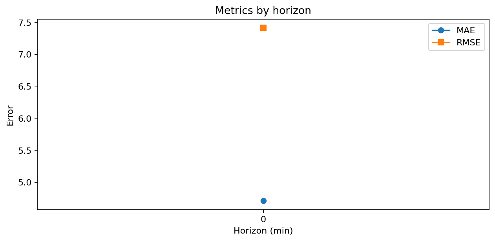
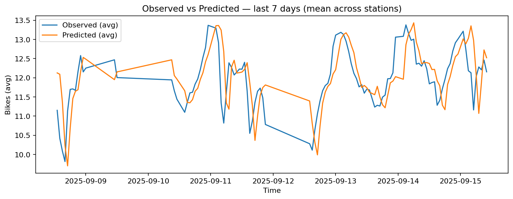
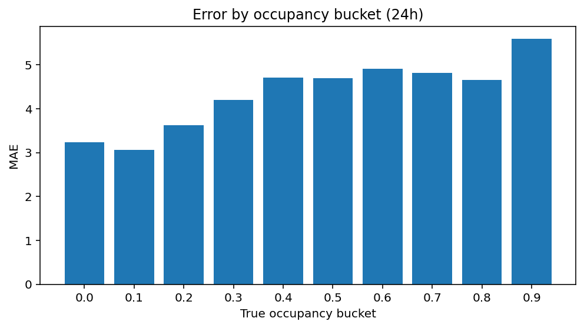

Métriques — performance du modèle¶
Cette page détaille comment nous évaluons la qualité prédictive du modèle, sur plusieurs horizons (ex. +15 / +30 / +60 minutes) et sous différents segments (stations, clusters, périodes). L'objectif est de mesurer utilement la précision, détecter des zones de faiblesse et alimenter des décisions (recalibrage, nouvelles features, fréquence de réentraînement).
1) Protocole d’évaluation¶
- Fenêtre d’évaluation : dernières semaines/mois (glissante), hors période d’entraînement.
- Horizon(s) : prédictions à H ∈ {15, 30, 60} minutes (paramétrable).
- Unité évaluée : nombre de vélos (ou taux d’occupation après normalisation).
- Granularité : agrégation horaire pour lisibilité, mais calculs faits point à point avant agrégation.
ℹ️ Les chiffres et figures ci-dessous se mettent à jour automatiquement via le pipeline.
2) Métriques principales¶
- MAE (Mean Absolute Error) : \( \text{MAE} = \frac{1}{n} \sum |\hat{y} - y| \)
Interprétation directe “en vélos”. Robuste aux grosses erreurs isolées. - RMSE (Root Mean Squared Error) : \( \text{RMSE} = \sqrt{\frac{1}{n} \sum (\hat{y} - y)^2} \)
Pénalise davantage les grosses erreurs ; utile pour capturer les pics. - MAPE (Mean Absolute Percentage Error) : \( \text{MAPE} = \frac{1}{n} \sum \frac{|\hat{y} - y|}{\max(y, \epsilon)} \)
Normalise par le niveau observé ; nuance : instable quand \(y\) proche de 0.
Comparaison par horizon :

📄 Export :
docs/assets/tables/model_metrics.csv
3) Observé vs. Prédit (lecture temporelle)¶
Courbe temporelle observé vs. prédit (horizon le plus court) pour valider la forme (pics/creux, déphasages) :

À vérifier en priorité :
- alignement des pics (heures de pointe),
- absence de biais systématique (sur/sous-prédiction),
- réactivité lors d’épisodes atypiques (événements météo/transport).
4) Erreurs par contexte¶
Analyser l’erreur par contexte permet de cibler les actions d’amélioration :
- Par niveau de charge (bucket de taux d’occupation) :
 - Par station (top/bottom) : export tabulaire pour investigation terrain.
- Par cluster (profils d’usage) : robustesse selon le type de station.
- Par période (heure/jour/semaine) : drift saisonnier ou hebdomadaire.
5) Calibration & biais¶
- Biais moyen : \( \mathbb{E}[\hat{y} - y] \) (doit être proche de 0).
- Calibration : distribution des erreurs stable dans le temps et vs. segments.
- Incertitude (si disponible) : intervalle simple (ex. quantiles empiriques) pour informer l’utilisateur.
En cas de sur/sous-prédiction persistante sur un segment (cluster, arrondissement), ouvrir une piste : feature(s) manquante(s), cible mal normalisée, données d’entrée bruitées.
6) Seuils, SLO et décisions¶
- SLO (Service Level Objective) : bornes cibles (ex. MAE ≤ 2.0 vélos à H=15).
- Déclencheurs : franchissement de seuils sur X jours consécutifs ⇒ analyse + réentraînement si confirmé.
- Journalisation : rapport mensuel avec évolution des métriques et changements de modèle.
7) Piste d’amélioration (exemples)¶
- Features météo enrichies (intensité pluie, vent, sensation).
- Effets événements (travaux, manifestations, perturbations transport).
- Normalisation par capacité (cible en taux pour robustesse cross-stations).
- Modèles séquentiels (ex. features lag/lead, stateful) sur stations sensibles.
Traçabilité¶
- Figures mises à jour dans
docs/assets/figs/ - Tableaux dans
docs/assets/tables/ - Changements de modèle traqués dans le changelog (commit + note).